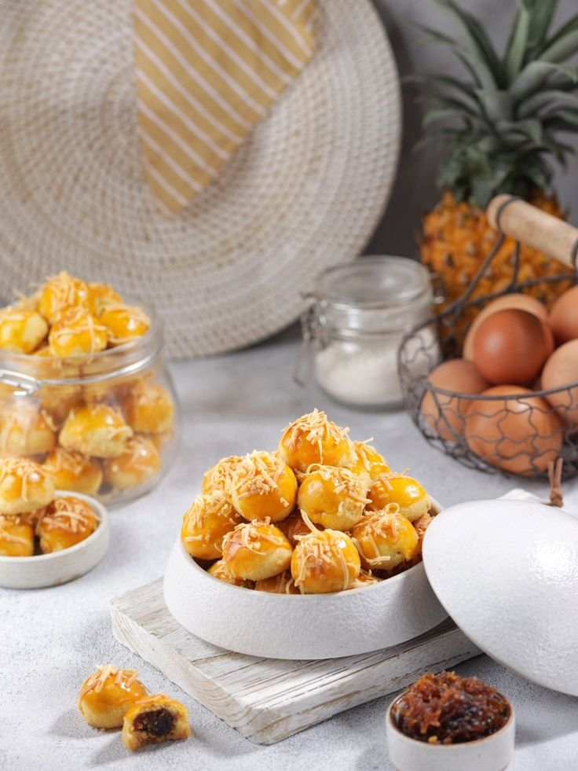
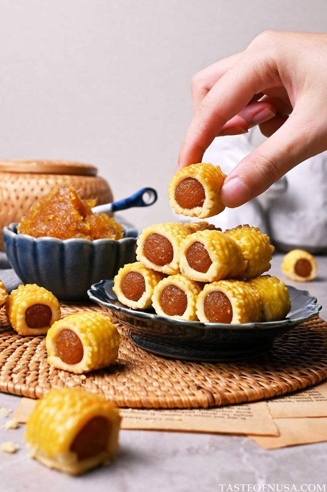

Produk wirausaha yang menyediakan berbagai macam kue kering.
Profil Kue Kering
Kue kering ialah camilan yang lumayan digemari oleh masyarakat dari anak kecil hingga dengan orang dewasa, diketahui bahwa kue kering memiliki rasa yang manis dan tekstur yang rapuh, kue kering pada umumnya mampu disimpan sampai waktu yang cukup lama. Selain itu, cara pembuatannya juga sangat mudah.
Harga Produk

Terdapat berbagai macam produk dari kue kering ini, diantara nya adalah :
NO
PRODUK
HARGA
KETERANGAN
1
Nastar
Rp.5000
3 pcs
2
Kastengel
Rp.5000
3 pcs
3
Kue Salju
Rp.5000
3 pcs
4
Kue Sagu
Rp.5000
3 pcs
Cara Pemesanan
Ayoo nikmati aneka kue kering ini secara langsung! ingin menikmati dirumah? jangan khawatir karena kami menyediakan pemasanan secara online.
Untuk pemesanan Kue Kering secara online bisa langsung menghubungi nomor di bawah ini :
Produk kue kering merupakan jenis makanan ringan yang populer, terutama di berbagai acara dan perayaan. Kue kering dikenal karena teksturnya yang renyah dan rasanya yang bervariasi. Berikut adalah penjelasan rinci terkait produk kue kering:
Jenis-jenis Kue Kering

Kue kering memiliki berbagai varian yang berbeda dalam rasa, bentuk, dan bahan. Beberapa jenis kue kering yang populer di Indonesia antara lain:
Nastar: Kue berisi selai nanas, berbentuk bulat dengan hiasan kuning telur di atasnya.
Kastengel: Kue keju dengan tekstur renyah dan rasa gurih.
Putri Salju: Kue berbentuk bulan sabit yang ditaburi gula bubuk.
Kue Sagu Keju: Kue yang terbuat dari sagu dan keju, dengan tekstur yang lembut dan renyah.
Standar Kualitas Kue Kering
Untuk memastikan kualitas kue kering, beberapa standar perlu diperhatikan:
Tekstur: Kue harus renyah dan tidak mudah hancur.
Rasa: Rasa harus seimbang, tidak terlalu manis atau terlalu gurih.
Tampilan: Bentuk dan warna harus konsisten dan menarik.
Kebersihan: Proses produksi harus memenuhi standar kebersihan dan keamanan pangan.